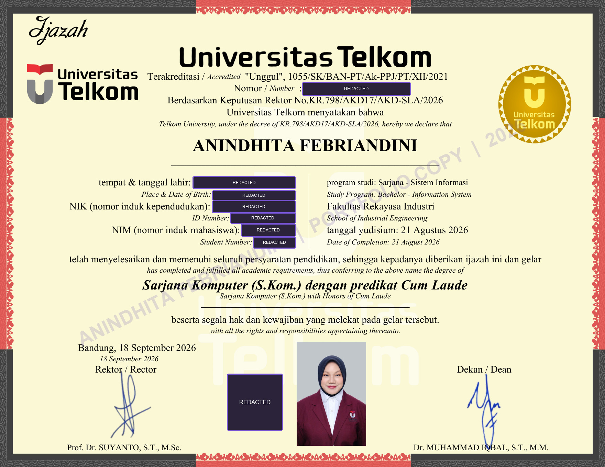
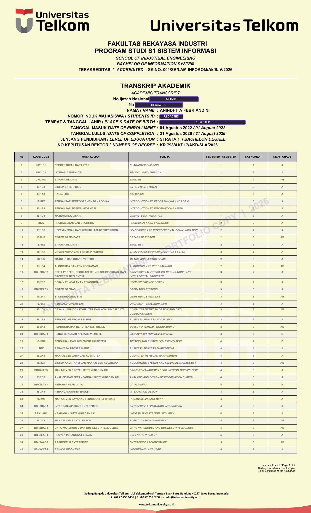
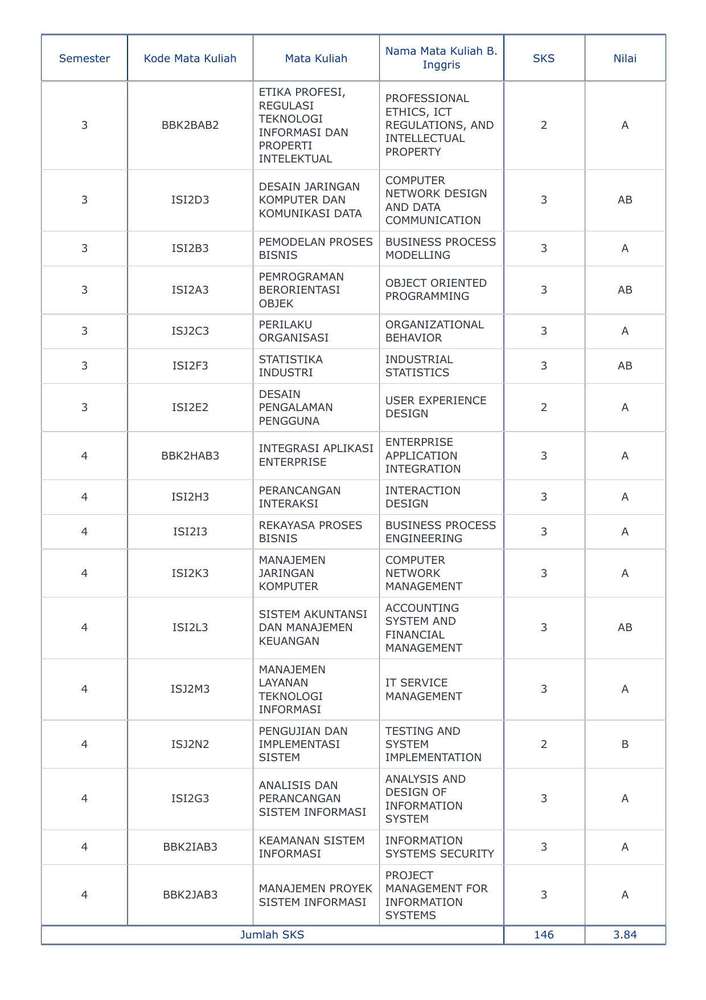

EDUCATION / ACADEMIC RECORDS ✦
Academic records
from my university journey.
Telkom University · Information Systems · 2022–2026



EDUCATION / ACADEMIC RECORDS ✦
Telkom University · Information Systems · 2022–2026


